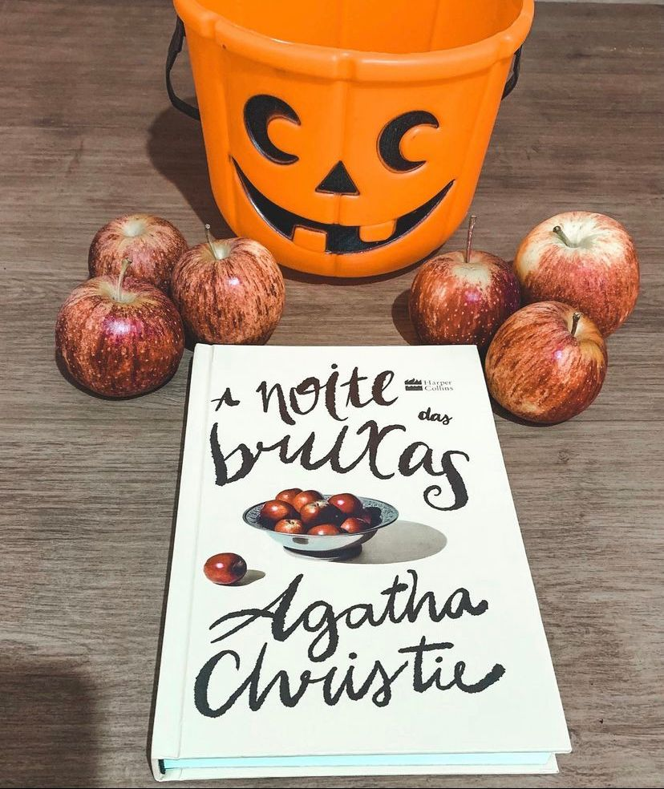

Arquivos Serial Killers
Para tudo! Vamos falar da nossa Rainha de romance policial 𝐀𝐠𝐚𝐭𝐡𝐚 𝐂𝐡𝐫𝐢𝐬𝐭𝐢𝐞! Maravilhosa! Então vamos ao livro da vez, “A noite das bruxas": 🍎🎃
Em uma festa de Dia das Bruxas organizada por Mrs.Ariadne Oliver, Joyce, uma adolescente com o costume de mentir para chamar a atenção, revela já ter testemunhado um assassinato. Ninguém acredita nela, mas, poucas horas depois, seu corpo é encontrado afogado próximo a uma bacia cheia de maçãs. Diante de um caso tão tenebroso, Mrs. Oliver decide pedir ajuda para a única pessoa que considera capaz de encontrar o culpado: Hercule Poirot.
Nesse mistério maravilhoso vamos ter nosso Detetive preferido Hercule Poirot tentando desvendar mais um assassinato. Aqui temos uma personagem bem interessante, a Sra. Ariadne Oliver uma escritora de livros policiais que me fez pensar se a própria Agatha Christie não quis se inserir na história. A história é fluida, a narrativa é muito bem construída e o suspense faz parte de toda história, todos os elementos que conhecemos a La Agatha Christie. Quem aí também ama esse ícone do mistério?